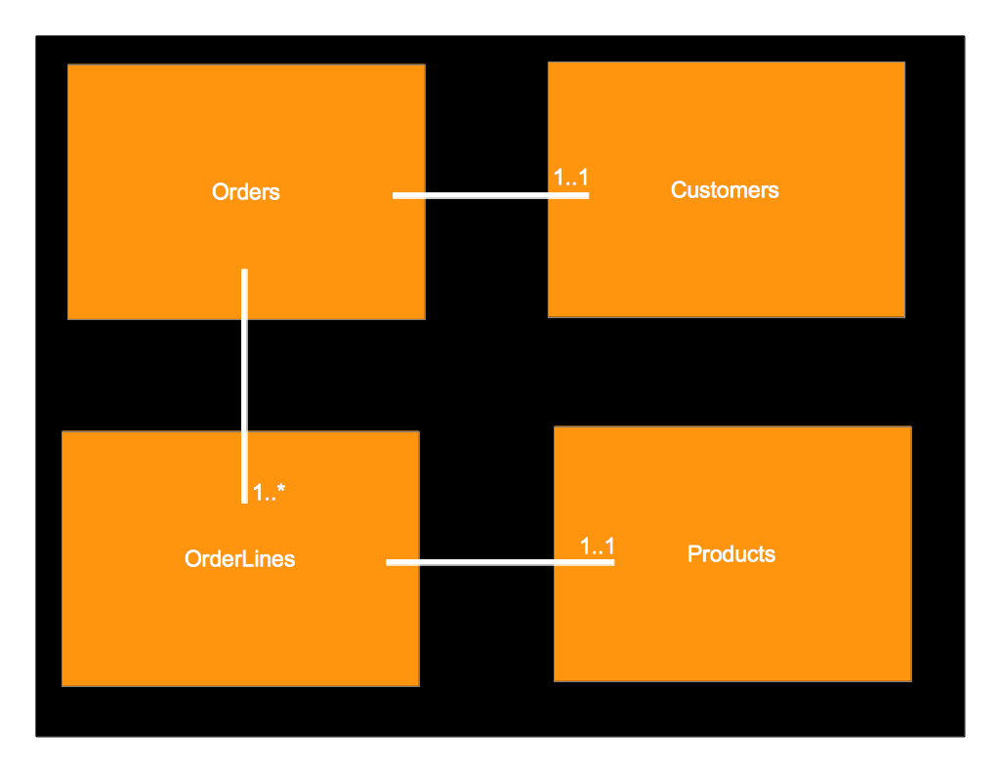

NoSQL and MongoDB
A Quick Overview
Who am I?
- Jonathon Wilson / @chilkari
- Director of Software Engineering, Demand Media
- Currently working on RSS Graffiti
- Facebook application
- ~ 3 million posts per day
- Uses MongoDB for all persistence
- Member of Montana Programmers in Bozeman
- Special Focus
- UI development, Javascript + AJAX
- Backend scalability and architecture
- Not biased towards SQL versus NoSQL
(also not biased towards hammers versus screwdrivers)
What is "NoSQL"
- A really bad name
- (A better name: NoREL)
- A different approach to storage
- ... which results in all kinds of other differences
SQL Data
NoSQL Data
{
Order Number: 1,
Customer: {
Name: Jonathon Wilson,
Address: {
Street: 123 Anywhere,
City: Bozeman,
State: MT,
Zip: 59718
}
},
Products: [
{
SKU: ABC,
Name: Wrench,
Item Price: $29.99,
Quantity: 1
}, (etc...)
],
Total: $79.99
}
Many Different Types
- Document (MongoDB, CouchDB)
- Graph (FlockDB)
- Key Value Store (Tokyo Cabinet, Memcache)
Key Differences with NoSQL
- No Schema
- Usually no ACID guarantees or transactions
- No Joins (except in application code)
- Designed to span many machines
- "Eventually Consistent"
Is Anybody Really Using It?
- Amazon
Should I Be Using It?
It depends on your problem.
Good Applications
- Sparse data
- Tons of update-heavy traffic
- Need to scale to huge amounts of data
- Expect lots of schema change/variation
- Web Apps with mostly CRUD
- Store for MapReduce/BigData Jobs
Should I Be Using It?
It depends on your problem.
Not-so-good Applications
- Adhoc querying/reporting
- Heavy need for multi-statement transactions
- Things that are obviously relational
What is MongoDB

- Free Document Database from 10Gen
- www.mongodb.org
Features
- Runs on Windows, Mac, Linux
- Indexes on any field at any depth
- Automatic Replication
- Automatic Sharding
- Rich Document Queries
- Atomic in-place updates
- Full javascript shell (variables, functions)
- Map/Reduce in the Engine
Sort-Of Comparisons to RDBMS
- RDBMS <-> MongoDB
- Table <-> Collection
- Row <-> Document
- Column <-> Key
- Composite Foreign Key <-> Substructure
- Relationship Foreign Key <-> (see 'join')
- Index <-> Index
- Join <-> Uhhh. Fill memory, join in app code
Quick Examples of the Basics
- CRUD
- Advanced Queries
- Interesting Updates
- Cursor Methods
CRUD
$ use foo;
switched to db foo
$ db.people.insert({"name":"Jon"});
$ db.people.findOne({"name":"Jon"});
{ "_id" : ObjectId("4ffe551b152e394382744c9d"),
"name" : "Jon" }
$ db.people.update({"name":"Jon"},
{$set:{"city":"Bozeman"}});
$ db.people.findOne({"name":"Jon"});
{
"_id" : ObjectId("4ffe551b152e394382744c9d"),
"city" : "Bozeman",
"name" : "Jon"
}
$ db.people.remove({"name":"Jon"});
$ db.people.count();
0
Advanced Queries
dot into structure: {"foo.bar.people.name": "Jon"}
$in, $nin, $all
$ne, $gt, $lt, $gte, $lte
$exists
$or, $nor, $and, $not
$regex
Javascript functions: $where:"this.a > 3"
Interesting Updates
$inc
$set, $unset
$push(obj), $pushAll([]),
$pop(), $pull(q)
$addToSet, $each
Cursor Methods
count()
limit()
skip()
sort()
Conclusion
At best, MongoDB is a powerful, fast, document database that, in the right setting, is easier to setup, test and use than RDBMS systems.
At worst, it's an alternative worth adding to your toolbox for a fresh perspective.